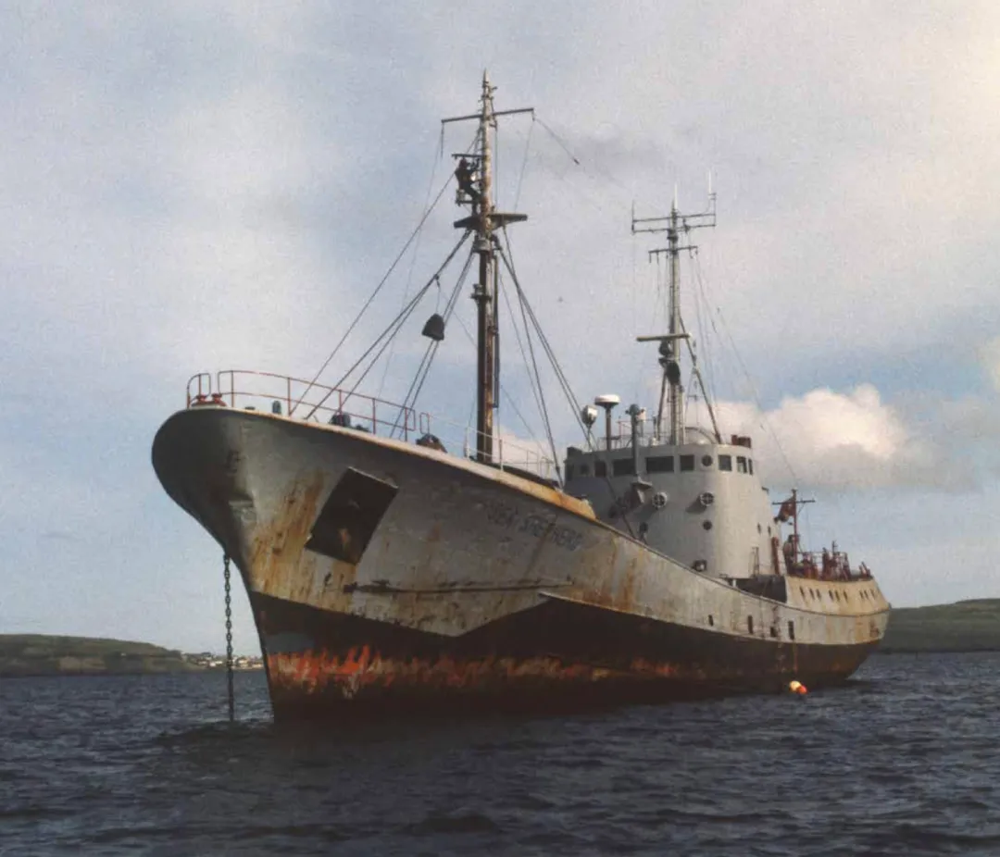
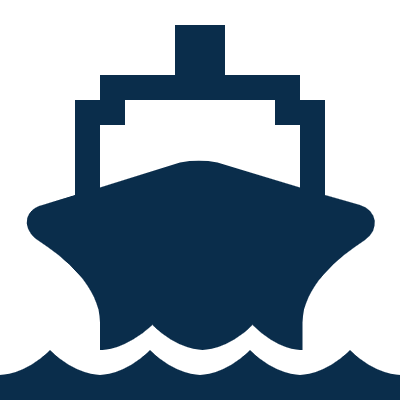

Sobre Thalassa
Protegiendo los océanos desde 1977
Sea Shepherd Conservation Society es una organización internacional dedicada a la defensa y conservación de la vida marina mediante la acción directa, la educación y la investigación.

¿Quiénes somos?
Desde nuestra fundación en 1977 por el capitán Paul Watson, trabajamos para proteger los océanos y las especies que los habitan mediante campañas de conservación y acción directa.
Nuestra organización desarrolla proyectos en distintos lugares del mundo para combatir la pesca ilegal, proteger hábitats marinos y promover el cumplimiento de las leyes ambientales.
Creemos que la protección de los océanos es fundamental para el equilibrio del planeta y para las futuras generaciones.
Nuestros pilares
Misión
Defender y conservar los océanos y toda la vida marina mediante acciones directas de conservación.

Acción directa
Intervenimos frente a actividades ilegales que ponen en peligro los ecosistemas y las especies marinas.
Trabajo global
Nuestras campañas se desarrollan en distintos países junto a voluntarios y organizaciones aliadas.
“Si los océanos mueren, nosotros también.”
Nuestra misión es actuar hoy para proteger los mares, su biodiversidad y las generaciones futuras.
Conocé nuestras campañas →